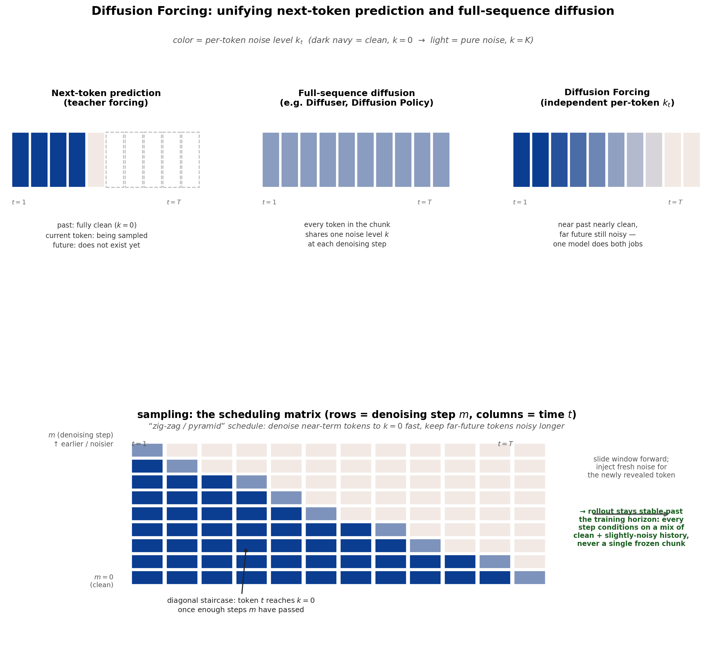

Diffusion Forcing: Next-Token Prediction Meets Full-Sequence Diffusion¶
Chen, Monso, Du, Simchowitz, Tedrake, Sitzmann. NeurIPS 2024. arXiv:2407.01392 · project page
1. The problem it unifies¶
You already know two sequence-generation recipes that look unrelated but actually sit at two ends of one spectrum:
| Next-token prediction (teacher forcing) | Full-sequence diffusion | |
|---|---|---|
| Example | GPT-style LLMs, autoregressive video/time-series models | Diffuser (RL planning), Diffusion Policy's action chunk |
| What's noisy | Nothing — every past token is the exact ground truth at train time | The entire sequence, at one shared noise level \(k\) per denoising step |
| Sequence length | Flexible — generate one token, then the next, forever | Fixed — must commit to a horizon \(T\) up front |
| Guidance (steer sampling toward a reward/goal) | Not really — once a token is emitted it is final, you can't "reconsider" it using information about the future | Yes — since the whole sequence is jointly denoised, a loss on token \(T\) can backprop into token \(1\) |
| Known failure mode | Compounding error: at train time the model only ever sees perfect ground-truth history; at test time it sees its own imperfect past predictions — a distribution-shift problem the model was never trained to correct (this is exactly the classic exposure-bias / DAgger problem) | Rigid: a Diffusion Policy chunk of horizon \(T_a\) can't be extended online, and re-planning means throwing away the whole chunk and starting a fresh independent denoising process |
Diffusion Forcing (DF) asks: what if noise level weren't a single global dial, but a per-token one? Then both recipes become special cases of the same model.
2. The core trick: noise as a masking level¶
Reuse the DDPM vocabulary you already know: \(x_t^{k}\) denotes token at sequence-position \(t\), corrupted to diffusion noise level \(k\in\{0,\dots,K\}\) (\(k=0\) is clean, \(k=K\) is pure Gaussian noise). The paper's reframing:
Diffusion Forcing trains a model to denoise a whole sequence \((x_t^{k_t})_{1\le t\le T}\) where every token gets its own, independently sampled \(k_t\) — instead of one shared \(k\) for the sequence (full-sequence diffusion) or the degenerate all-\(k_t=0\)-in-the-past / one-token-fully-noisy pattern (teacher forcing).

Because training exposes the model to every combination of per-token noise levels — including ones where recent history is only partially denoised — the model is forced to learn something neither baseline learns: how to keep producing good outputs even when its own conditioning history is imperfect. That single fact is what fixes the compounding-error problem below.
3. Architecture: it has to be causal¶
For \(x_t^{k_t}\) to depend only on \(x_{<t}\) (so that the "next-token" framing makes sense), Diffusion Forcing needs a causal sequence model — the paper's minimal implementation is a plain RNN, called Causal Diffusion Forcing (CDF) (a causal/masked-attention Transformer also works, discussed in the appendix).
The RNN maintains a latent \(z_t\) that behaves exactly like a Bayes filter belief state:
- If \(k_t=0\) (clean observation fed in): this is an ordinary filtering update — incorporate real evidence.
- If \(k_t=K\) (pure noise fed in, i.e. no real information): this reduces to just the prior transition \(p_\theta(z_t\mid z_{t-1})\) — predict forward with no new evidence.
- Anything in between: a partial update, weighted by how much real signal survived the noise.
This is the elegant part: diffusion noise level and "how much you trust this observation" are the same axis. A next-token predictor is the corner case where all past \(k\)'s are \(0\) and the current one is \(K\); a full-sequence diffusion model is the corner case where all \(k_t\)'s are locked to the same value at every step.
4. Training objective¶
Exactly the DDPM \(\epsilon\)-prediction loss you already know, just summed over independently-noised tokens in the sequence, with the RNN latent \(z_{t-1}\) as the conditioning variable instead of nothing:
where each \(k_t\) is drawn independently and uniformly from \(\{0,\dots,K\}\), and \(x_t^{k_t}=\sqrt{\bar\alpha_{k_t}}x_t+\sqrt{1-\bar\alpha_{k_t}}\epsilon_t\) as usual.
# Algorithm 1: Diffusion Forcing training (one iteration)
x = sample_trajectory() # (x_1, ..., x_T), ground-truth sequence
z_prev = z_init
losses = []
for t in range(T):
k_t = randint(0, K) # independent per-token noise level
eps_t = randn_like(x[t])
x_t_noisy = sqrt(alpha_bar[k_t]) * x[t] + sqrt(1 - alpha_bar[k_t]) * eps_t
z_t = rnn_transition(z_prev, x_t_noisy, k_t) # Bayes-filter-style latent update
eps_hat_t = eps_head(z_prev, x_t_noisy, k_t) # predict the injected noise
losses.append((eps_hat_t - eps_t) ** 2)
z_prev = z_t
loss = mean(losses)
loss.backward(); optimizer.step()
Sampling \(k_{1:T}\) uniformly and independently is what makes the training distribution cover every masking pattern — including "past mostly clean, but with a little residual noise," which is exactly the situation the model will face during long autoregressive rollouts. The paper proves this loss is a (reweighted) ELBO on the log-likelihood of every sub-sequence of the training data simultaneously — training on one sequence implicitly trains the model to model all of its prefixes, suffixes, and partially-revealed windows.
5. Sampling: the scheduling matrix, and why long rollouts stop diverging¶
Generation is controlled by a 2D scheduling matrix \(\mathcal K \in [K]^{M\times T}\): rows are denoising steps \(m=M{-}1,\dots,0\), columns are time steps \(t=1,\dots,T\), and \(\mathcal K_{m,t}\) prescribes the target noise level of token \(t\) after row \(m\). You sweep down the rows; by the last row (\(m{=}0\)) every token is clean.
# Algorithm 2: DF sampling with a scheduling matrix K
x = randn(T, dim) # all tokens start as pure noise, k=K
z_prev = z_init
for m in reversed(range(M)): # M-1 (noisiest) -> 0 (clean)
for t in range(T):
z_t = rnn_transition(z_prev, x[t], K_prev[m, t]) # belief update at previous level
k = K[m, t]
x[t] = one_reverse_diffusion_step(x[t], eps_head(z_t, x[t], k), k)
z_prev = z_t
x = add_guidance(x, grad_log_reward(x)) # optional, see §6
return x # all tokens now at k=0
The interesting, non-obvious schedule is the "zig-zag" / pyramid one: don't force every column to the same row's noise level; instead let near-future columns reach \(k{=}0\) before far-future columns do. Concretely, starting from all-noise \([x_1^K, x_2^K, x_3^K]\), you might denoise to \([x_1^0, x_2^{K/2}, x_3^K]\), then \([x_1^0, x_2^0, x_3^{K/2}]\), then fully clean — a diagonal staircase in the (row, column) grid, shown in the bottom half of the figure above.
Why this makes long video/rollout generation stable, when plain autoregressive generation diverges: a standard autoregressive model is only ever trained on perfectly clean history (teacher forcing), so at test time, once its own generated frames start drifting off the true data manifold, the model has never seen that kind of input and errors compound catastrophically. Diffusion Forcing was trained on every mixture of clean and noisy history, so feeding it a slightly noisy version of its own past output during rollout is squarely inside its training distribution — the model has effectively learned to self-correct small drift instead of being blindsided by it. Practically, DF rolls a fixed-size window forward: as one new (noisy) token is revealed at the far end, an already-generated token exits at the near end, and the model continues to denoise using latents built from history that's mostly-but-not-perfectly clean.
This is a direct, formalized generalization of the "warm-start the next chunk's denoising from the previous prediction" heuristic you saw in Diffusion Policy — instead of a hand-tuned trick bolted on at inference time, it's baked into the training objective itself via the noise-level randomization.
6. Guidance and planning: why this beats Diffuser and Diffusion Policy at decision-making¶
Full-sequence diffusion planners (e.g. Diffuser) can guide sampling toward high reward (classifier guidance: nudge \(\epsilon_\theta\) by \(\nabla_x \log c(y\mid x^k)\)), but only for a fixed, pre-committed horizon, and — because the whole sequence is denoised in lock-step at one shared noise level — the generated actions and generated future states end up not causally consistent with each other. (Diffuser's own implementation works around this by throwing away its generated actions and using a hand-crafted PD controller instead — a real weakness reported in the paper.) A Diffusion Policy chunk, meanwhile, is a policy, not a planner: it has no mechanism to look far into the future and be guided by a sparse, long-horizon goal.
Diffusion Forcing gets both, because of causality + variable noise levels together:
- Flexible horizon. The same trained model can be run with a short lookahead (as a reactive policy, low latency) or a long lookahead (as a planner, via guidance) — no retraining, no architecture change. Neither Diffuser (fixed horizon) nor Diffusion Policy (needs small, fixed lookahead) can do this.
- Causally-consistent guidance. Because future tokens can be diffused without fully diffusing the past, a reward gradient computed on future states/actions can propagate backward through the causal RNN into the current action being sampled — guiding "what should I do right now" using information about a desirable long-term outcome, while respecting that the past is fixed and known.
- Monte Carlo Guidance (MCG). Since the near future can be kept fully noisy while guiding the current step, DF can draw multiple samples of "what might happen next" and average their guidance gradients — steering the current action by the expected reward over many possible futures, in the spirit of sampling-based MPC methods like MPPI. Non-causal full-sequence diffusion has no clean way to do this (there's no "future you haven't committed to yet" to resample).
Empirically (D4RL maze planning): Diffusion Forcing beats Diffuser and other offline-RL baselines on all 6 tested mazes, and — unlike Diffuser — its own generated actions are directly executable and self-consistent, without needing a bolted-on PD controller.
7. Where this sits relative to what you already know¶
| Model | Noise level per token | Architecture | Horizon | Guidance |
|---|---|---|---|---|
| DDPM / Flow Matching (single image/vector) | one shared \(k\) (or \(t\in[0,1]\)) for the whole object | non-causal | — | classifier / CFG guidance on the whole object |
| Diffusion Policy | one shared \(k\) for the whole action chunk | non-causal (chunk is denoised jointly) | fixed \(T_a\), receding-horizon re-planned from scratch each cycle | none (pure BC) |
| Diffuser (RL planner) | one shared \(k\) for the whole trajectory | non-causal | fixed | yes, but actions/states can be causally inconsistent |
| GPT-style LLM | \(k=0\) history, "\(k=K\)" for the single next token | causal | unlimited, but drifts if fed its own imperfect outputs | none |
| Diffusion Forcing | independent \(k_t\) per token | causal | flexible / unlimited, stable past training horizon | yes, causally consistent + Monte Carlo Guidance |
Diffusion Forcing is best understood as the framework that contains the other four as corner cases of a single (time-axis \(t\)) \(\times\) (noise-axis \(k\)) design space — worth remembering if you keep running into "diffusion for sequential/robotic decision-making" papers, since a growing number of recent world-model and long-horizon planning papers build directly on this idea (e.g. rolling-diffusion / streaming video-diffusion world models).
References¶
- Chen, Monso, Du, Simchowitz, Tedrake, Sitzmann. Diffusion Forcing: Next-token Prediction Meets Full-Sequence Diffusion. NeurIPS 2024.
- Janner et al. Planning with Diffusion for Flexible Behavior Synthesis (Diffuser) — the full-sequence-diffusion planning baseline DF compares against.
- Chi et al. Diffusion Policy — the fixed-chunk, receding-horizon special case discussed above.
创建日期: 2026年8月14日 11:05:08